Если в квадратном уравнении ax2 + bx + c = 0 второй коэффициент b является чётным, то решение этого уравнения можно немного упростить. Дискриминант для такого уравнения можно вычислить по формуле D1 = k2 − ac, а корни по формулам
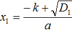
и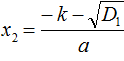
. Содержание урокаПримеры
Решим квадратное уравнение x2 + 6x − 16 = 0. В нём второй коэффициент является чётным. Чтобы воспользоваться формулами для чётного коэффициента, нужно сначала узнать чему равна переменная k.
Любое четное число n можно представить в виде произведения числа 2 и числа k, то есть 2k.
\[n = 2k\]
Например, число 10 можно представить как 2 × 5.
\[10 = 2 \times 5\]
В этом произведении k = 5.
Число 12 можно представить как 2 × 6.
\[12 = 2 \times 6\]
В этом произведении k = 6.
Число −14 можно представить как 2 × (−7)
В этом произведении k = −7.
Как видим, сомножитель 2 не меняется. Меняется только сомножитель k.
В уравнении x2 + 6x − 16 = 0 вторым коэффициентом является число 6. Это число можно представить как 2 × 3. В этом произведении k = 3. Теперь можно воспользоваться формулами для чётного коэффициента.
Найдем дискриминант по формуле D1 = k2 − ac
D1 = k2 − ac = 32 − 1 × (−16) = 9 + 16 = 25
Теперь вычислим корни по формулам: и .
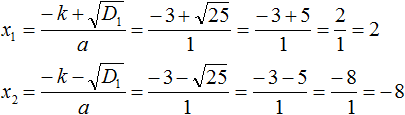
Значит корнями уравнения x2 + 6x − 16 = 0 являются числа 2 и −8.
В отличие от стандартной формулы для вычисления дискриминанта (D=b2 − 4ac), в формуле D1 = k2 − ac не нужно выполнять умножение числа 4 на ac.
И в отличие от формул
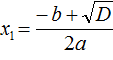
и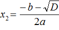
формулы и не содержат в знаменателе множитель 2 что опять же освобождает нас от дополнительных вычислений.Пример 2. Решить квадратное уравнение 5x2 − 6x + 1=0
Второй коэффициент является чётным числом. Его можно представить в виде 2 × (−3). То есть k = −3. Найдём дискриминант по формуле D1 = k2 − ac
D1 = k2 − ac = (−3)2 − 5 × 1 = 9 − 5 = 4
Дискриминант больше нуля. Значит уравнение имеет два корня. Для их вычисления воспользуемся формулами и
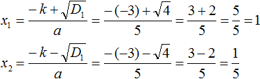
Пример 3. Решить квадратное уравнение x2 − 10x − 24 = 0
Второй коэффициент является чётным числом. Его можно представить в виде 2 × (−5). То есть k = −5. Найдём дискриминант по формуле D1 = k2 − ac
D1 = k2 − ac = (−5)2 − 1 × (−24) = 25 + 24 = 49
Дискриминант больше нуля. Значит уравнение имеет два корня. Для их вычисления воспользуемся формулами и
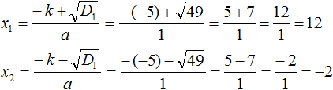
Обычно для определения числа k поступают так: делят второй коэффициент на 2.
Действительно, если второй коэффициент b является чётным числом, то его можно представить как b = 2k. Чтобы из этого равенства выразить сомножитель k, нужно произведение b разделить на сомножитель 2
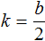
Например, в предыдущем примере для определения числа k можно было просто разделить второй коэффициент −10 на 2
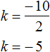
Пример 5. Решить квадратное уравнение
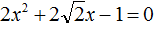
Коэффициент b равен
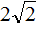
. Это выражение состоит из множителя 2 и выражения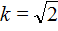
Найдём дискриминант по формуле D1 = k2 − ac
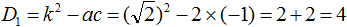
Дискриминант больше нуля. Значит уравнение имеет два корня. Для их вычисления воспользуемся формулами и
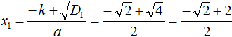
При вычислении корня уравнения получилась дробь, в которой содержится квадратный корень из числа 2. Квадратный корень из числа 2 извлекается только приближённо. Если выполнить это приближённое извлечение, а затем сложить результат с 2, и затем разделить числитель на знаменатель, то получится не очень красивый ответ.
В таких случаях ответ записывают, не выполняя приближённых вычислений. В нашем случае первый корень уравнения будет равен
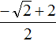
.Вычислим второй корень уравнения:
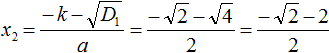
Вывод формул
Давайте наглядно увидим, как появились формулы для вычисления корней квадратного уравнения с чётным вторым коэффициентом.
Рассмотрим квадратное уравнение ax2 + bx + c = 0. Допустим, что коэффициент b является чётным числом. Тогда его можно обозначить как 2k
\[b = 2k\]
Заменим в уравнении ax2 + bx + c = 0 коэффициент b на выражение 2k
ax2 + 2kx + c = 0
Теперь вычислим дискриминант по ранее известной формуле:
D = b2 − 4ac = (2k)2 − 4ac = 4k2 − 4ac
Вынесем в получившемся выражении за скобки общий множитель 4
D = b2 − 4ac = (2k)2 − 4ac = 4k2 − 4ac = 4(k2 − ac)
Что можно сказать о получившемся дискриминанте? При чётном втором коэффициенте он состоит из множителя 4 и выражения k2 − ac.
В выражении 4(k2 − ac) множитель 4 постоянен. Значит знак дискриминанта зависит от выражения k2 − ac. Если это выражение меньше нуля, то и D будет меньше нуля. Если это выражение больше нуля, то и D будет больше нуля. Если это выражение равно нулю, то и D будет равно нулю.
То есть выражение k2 − ac это различитель — дискриминант. Такой дискриминант принято обозначать буквой D1
D1 = k2 − ac
Теперь посмотрим как выводятся формулы и .
В нашем уравнении ax2 + bx + c = 0 коэффициент b заменён на выражение 2k. Воспользуемся стандартными формулами для вычисления корней. То есть формулами и . Только вместо b будем подставлять 2k. Также на забываем, что D у нас равно выражению 4(k2 − ac)
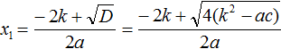
Но ранее было сказано, что выражение k2 − ac обозначается через D1. Тогда в наших преобразованиях следует сделать и эту замену:
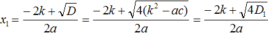
Теперь вычислим квадратный корень, расположенный в числителе. Это квадратный корень из произведения — он равен произведению корней. Остальное перепишем без изменений:
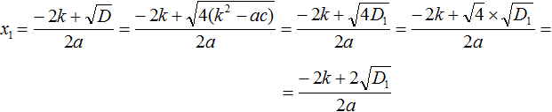
Теперь в получившемся выражении вынесем за скобки общий множитель 2
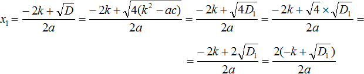
Сократим получившуюся дробь на 2
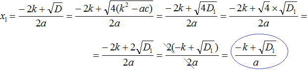
Аналогично вывóдится формула для вычисления второго корня:
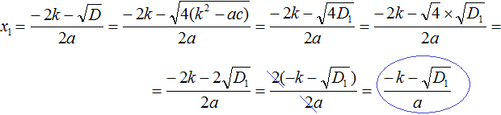
Задания для самостоятельного решения
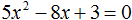
Показать решение
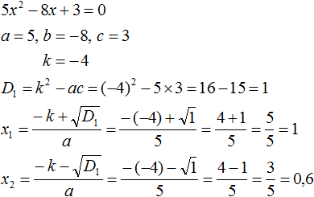
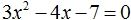
Показать решение
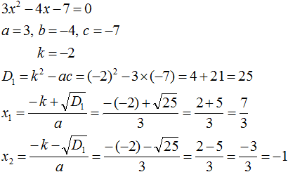
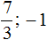
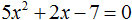
Показать решение
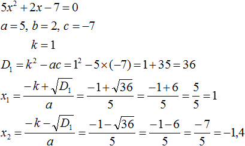
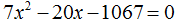
Показать решение
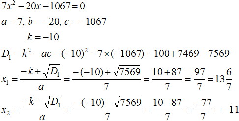
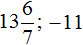
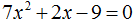
Показать решение
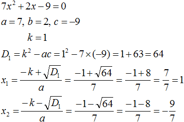
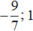
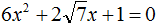
Показать решение
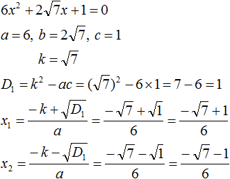
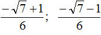
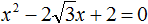
Показать решение
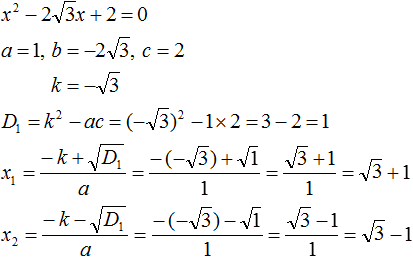
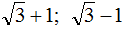
Понравился урок?
Вступай в нашу новую группу Вконтакте и начни получать уведомления о новых уроках